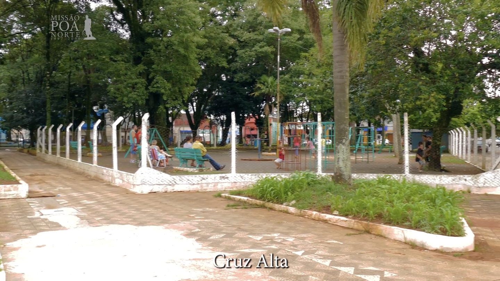

quadro = FileAttachment("data/quadro.json").json()
snaps = quadro.snapshots
pessoas = new Map(quadro.missionarios.map(p => [p.id, p]))
MES = ["jan", "fev", "mar", "abr", "mai", "jun", "jul", "ago", "set", "out", "nov", "dez"]
fmtYM = k => { if (!k) return "—"; const [y, m] = k.split("-"); return `${MES[+m - 1]}/${y}`; }
nomeCompleto = l => l.replace(/^E\s+/, "Élder ").replace(/^S\s+/, "Síster ")
norm = s => String(s ?? "").normalize("NFD").replace(/[\u0300-\u036f]/g, "").toLowerCase().replace(/-/g, " ").replace(/\s+/g, " ").trim()
aparicoes = {
const m = new Map();
for (const s of snaps) for (const z of s.zonas) for (const a of z.areas) for (const p of a.dupla) {
const k = p.id ?? "?" + p.n;
if (!m.has(k)) m.set(k, []);
m.get(k).push({ key: s.key, zona: z.nome, area: a.rotulo ?? z.nome, companheiros: a.dupla.filter(x => x !== p).map(x => nomeCompleto(x.n)) });
}
return m;
}
function estado(v) { const el = htl.html`<span hidden></span>`; el.value = v; return el; }
function definir(el, v) { el.value = v; el.dispatchEvent(new Event("input", { bubbles: true })); }
viewof quadroKey = estado("1997-10")
DIVISAO = "1998-07"
snapIdx = snaps.findIndex(s => s.key === quadroKey)
snapAtual = snaps[snapIdx]Missão Brasil Porto Alegre Norte · 1997–2000
O Chamado
Presidente Arlan e Síster Sally Woodward





Fotos: cortesia do Élder George
A Missão
Eleva o coração e regozija-te, pois é chegada a hora de tua missão. Lift up your heart and rejoice, for the hour of your mission is come.
A Missão Brasil Porto Alegre Norte cobria a metade norte do Rio Grande do Sul, o estado mais ao sul do Brasil: da zona norte de Porto Alegre e sua região metropolitana até a Serra Gaúcha, o Planalto e o Litoral Norte, e, até julho de 1998, o Noroeste e as Missões, perto da fronteira com a Argentina.
Porto Alegre e região metropolitana
A capital gaúcha e as cidades ao seu redor: Canoas, Esteio, Gravataí, Cachoeirinha, Alvorada e Guaíba. Bairros movimentados, ônibus lotados e muitas zonas da missão.
Vale dos Sinos
Novo Hamburgo, São Leopoldo, Sapiranga e Taquara. São Leopoldo foi o berço da imigração alemã no Brasil, em 1824, e o vale é conhecido pela indústria de calçados.
Serra Gaúcha
Caxias do Sul, Bento Gonçalves, Farroupilha, Gramado e Canela. Terra da imigração italiana a partir de 1875, dos parreirais e do vinho, com invernos frios e, às vezes, neve.
Planalto e Campos de Cima da Serra
Passo Fundo, Erechim, Carazinho, Marau e Vacaria. Lavouras de soja, trigo e milho, os pomares de maçã de Vacaria e algumas das madrugadas mais frias do estado.
Litoral Norte
Osório, Tramandaí e Capão da Canoa. Praias, lagoas e vento constante: cheias de veranistas no verão e quase vazias no inverno.
Noroeste e Missões até julho de 1998
Santo Ângelo, Ijuí, Cruz Alta e Santa Rosa, perto das ruínas jesuítico-guaranis de São Miguel das Missões, Patrimônio Mundial da UNESCO.
O clima
Subtropical, com as quatro estações bem marcadas. Os verões são quentes e úmidos: em Porto Alegre o termômetro passa fácil dos 35 °C. Os invernos são frios e chuvosos, com geada no interior, neve de vez em quando nas partes altas da Serra e o minuano soprando do sudoeste. Muito missionário norte-americano chegou esperando o calor do Brasil e conheceu o frio gaúcho.
O povo
O gaúcho é hospitaleiro e orgulhoso das suas tradições: o chimarrão passado de mão em mão, o churrasco de domingo, os CTGs e o 20 de Setembro, que lembra a Revolução Farroupilha. A população mistura descendentes de portugueses e açorianos, alemães, italianos, poloneses, africanos e indígenas. No interior ainda se ouve o talian ou o alemão em casa, e todo missionário logo aprendia a dizer “bah, tchê!”.
Julho de 1998: a missão foi dividida para formar a Missão Brasil Santa Maria. As zonas de Ijuí e Santo Ângelo passaram para a nova missão.
The Brazil Porto Alegre North Mission covered the northern half of Rio Grande do Sul, Brazil's southernmost state: from the north side of Porto Alegre and its metro area up through the Serra Gaúcha highlands, the Planalto and the northern coast, and, until July 1998, the Northwest and the Missões region near the Argentine border.
Porto Alegre and its metro area
The state capital and the cities around it: Canoas, Esteio, Gravataí, Cachoeirinha, Alvorada and Guaíba. Busy neighborhoods, packed buses and many of the mission's zones.
Vale dos Sinos
Novo Hamburgo, São Leopoldo, Sapiranga and Taquara. São Leopoldo was the cradle of German immigration to Brazil in 1824, and the valley is known for its shoe industry.
Serra Gaúcha
Caxias do Sul, Bento Gonçalves, Farroupilha, Gramado and Canela. Settled by Italian immigrants from 1875 on: vineyards, wine, cold winters and the occasional snowfall.
Planalto and Campos de Cima da Serra
Passo Fundo, Erechim, Carazinho, Marau and Vacaria. Soy, wheat and corn fields, Vacaria's apple orchards and some of the coldest mornings in the state.
Northern coast
Osório, Tramandaí and Capão da Canoa. Beaches, lagoons and constant wind: crowded with vacationers in summer, nearly empty in winter.
Northwest and Missões until July 1998
Santo Ângelo, Ijuí, Cruz Alta and Santa Rosa, near the Jesuit-Guarani ruins of São Miguel das Missões, a UNESCO World Heritage Site.
The climate
Subtropical, with four distinct seasons. Summers are hot and humid; Porto Alegre easily tops 35 °C (95 °F). Winters are cold and rainy, with frost inland, occasional snow in the high Serra and the minuano wind blowing in from the southwest. Many North American missionaries arrived expecting tropical Brazil and met the gaúcho winter instead.
The people
Gaúchos are warm, hospitable and proud of their traditions: chimarrão passed from hand to hand, Sunday churrasco, the CTG tradition centers and the 20th of September, which remembers the Farroupilha Revolution. The population blends Portuguese and Azorean, German, Italian, Polish, African and Indigenous roots. In the interior you can still hear Talian or German spoken at home, and every missionary soon learned to say “bah, tchê!”.
July 1998: the mission was divided to create the Brazil Santa Maria Mission. The Ijuí and Santo Ângelo zones went to the new mission.
As Áreas
O quadro de transferências
Escolha um mês para ver todas as zonas, áreas e duplas da missão naquele momento. Toque num nome para ver quando o missionário chegou e saiu. Viu algum erro? Escreva para info@ochamado.net.
Os Missionários
Chegadas e saídas
515 missionários serviram com os Woodward. Escolha o ano e o mês para ver quem chegou e quem partiu.
Procure um missionário
Digite um sobrenome para ver todos os quadros, áreas e companheiros daquele missionário.
O Jornal
O boletim da missão
Edições do O Chamado publicadas durante a missão dos Woodward.
Tem uma edição que falta aqui?
Se você guardou algum número do O Chamado que não está nesta lista, escreva para info@ochamado.net.

Os Woodwards
Foto: Church News, 2007
Arlan & Sally Woodward
Presidente e Síster da Missão Brasil Porto Alegre Norte, 1997–2000. Em 2007 voltaram ao Brasil para presidir o Centro de Treinamento Missionário.
Contato
Comentários e sugestões
Tem fotos, histórias, correções no quadro de transferências ou ideias para o site? Adoraríamos ouvir de você.
info@ochamado.net